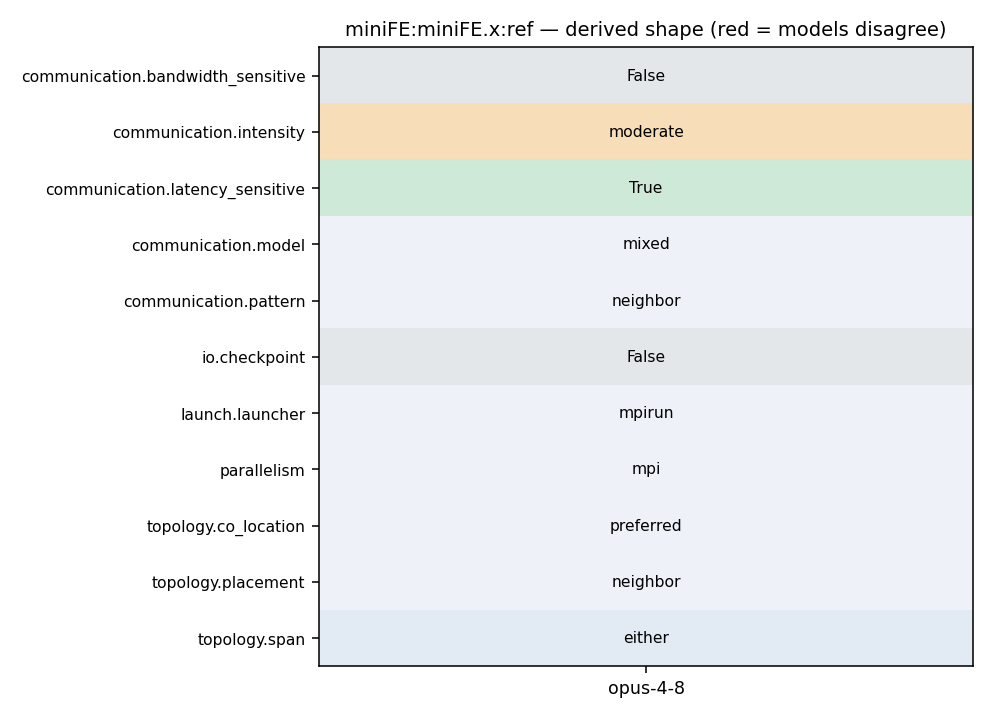

mpirun -np N ./miniFE.x -nx <X> -ny <Y> -nz <Z>
180 #ifdef HAVE_MPI 181 magnitude local_dot = result, global_dot = 0; 182 MPI_Datatype mpi_dtype = TypeTraits<magnitude>::mpi_type(); 183 MPI_Allreduce(&local_dot, &global_dot, 1, mpi_dtype, MPI_SUM, MPI_COMM_WORLD); 184 return global_dot; 185 #else 186 return result;
180 #ifdef HAVE_MPI 181 magnitude local_dot = result, global_dot = 0; 182 MPI_Datatype mpi_dtype = TypeTraits<magnitude>::mpi_type(); 183 MPI_Allreduce(&local_dot, &global_dot, 1, mpi_dtype, MPI_SUM, MPI_COMM_WORLD); 184 return global_dot; 185 #else 186 return result;
97 int n_recv = recv_length[i]; 98 MPI_Irecv(x_external, n_recv, mpi_dtype, neighbors[i], MPI_MY_TAG, 99 MPI_COMM_WORLD, &request[i]); 100 x_external += n_recv; 101 } 102 103 #ifdef MINIFE_DEBUG
131 132 TICK(); waxpby(one, b, -one, Ap, r); TOCK(tWAXPY); 133 134 TICK(); rtrans = dot(r, r); TOCK(tDOT); 135 136 //std::cout << "rtrans="<<rtrans<<std::endl; 137
129 130 Scalar* s_buffer = &send_buffer[0]; 131 132 for(int i=0; i<num_neighbors; ++i) { 133 int n_send = send_length[i]; 134 MPI_Send(s_buffer, n_send, mpi_dtype, neighbors[i], MPI_MY_TAG, 135 MPI_COMM_WORLD);
131 132 TICK(); waxpby(one, b, -one, Ap, r); TOCK(tWAXPY); 133 134 TICK(); rtrans = dot(r, r); TOCK(tDOT); 135 136 //std::cout << "rtrans="<<rtrans<<std::endl; 137
129 130 Scalar* s_buffer = &send_buffer[0]; 131 132 for(int i=0; i<num_neighbors; ++i) { 133 int n_send = send_length[i]; 134 MPI_Send(s_buffer, n_send, mpi_dtype, neighbors[i], MPI_MY_TAG, 135 MPI_COMM_WORLD);
97 int n_recv = recv_length[i]; 98 MPI_Irecv(x_external, n_recv, mpi_dtype, neighbors[i], MPI_MY_TAG, 99 MPI_COMM_WORLD, &request[i]); 100 x_external += n_recv; 101 } 102 103 #ifdef MINIFE_DEBUG
17 -DHAVE_MPI -DMPICH_IGNORE_CXX_SEEK \ 18 -DMINIFE_REPORT_RUSAGE 19 20 LDFLAGS= 21 LIBS= 22 23 CXX=mpicxx
18 -DMINIFE_REPORT_RUSAGE 19 20 LDFLAGS= 21 LIBS= 22 23 CXX=mpicxx 24 CC=mpicc
33 34 To use the MiniFE mini-application you should run: 35 36 ./miniFE.x -nx <X prob> -ny <Y prob> -nz <Z prob> 37 38 Where <X/Y/Z prob> is set to the size of each problem dimension. The 39 default problem is very small to enable a very quick test. You should
20 LDFLAGS= 21 LIBS= 22 23 CXX=mpicxx 24 CC=mpicc 25 26 #CXX=g++
14 CXXFLAGS = $(CFLAGS) 15 16 CPPFLAGS = -I. -I../utils -I../fem $(MINIFE_TYPES) $(MINIFE_MATRIX_TYPE) \ 17 -DHAVE_MPI -DMPICH_IGNORE_CXX_SEEK \ 18 -DMINIFE_REPORT_RUSAGE 19 20 LDFLAGS=
20 LDFLAGS= 21 LIBS= 22 23 CXX=mpicxx 24 CC=mpicc 25 26 #CXX=g++
131 132 TICK(); waxpby(one, b, -one, Ap, r); TOCK(tWAXPY); 133 134 TICK(); rtrans = dot(r, r); TOCK(tDOT); 135 136 //std::cout << "rtrans="<<rtrans<<std::endl; 137
129 130 Scalar* s_buffer = &send_buffer[0]; 131 132 for(int i=0; i<num_neighbors; ++i) { 133 int n_send = send_length[i]; 134 MPI_Send(s_buffer, n_send, mpi_dtype, neighbors[i], MPI_MY_TAG, 135 MPI_COMM_WORLD);
131 132 TICK(); waxpby(one, b, -one, Ap, r); TOCK(tWAXPY); 133 134 TICK(); rtrans = dot(r, r); TOCK(tDOT); 135 136 //std::cout << "rtrans="<<rtrans<<std::endl; 137
50 Y-dimension for the next run. Keep the Z-dimension fixed. This is useful 51 for some application runs. 52 53 (2) Or: define a base problem size (nx * ny * nz) and then use the 54 following equation set nz = ny = nz = cbrt( (base_nx * base_ny * 55 base_nz) * (number of MPI ranks) ). This is useful for some other 56 application runs.